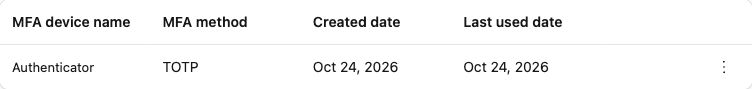
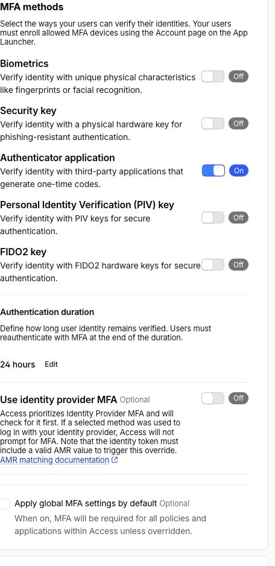
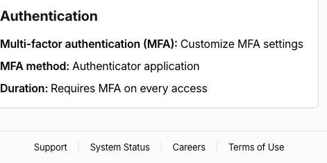
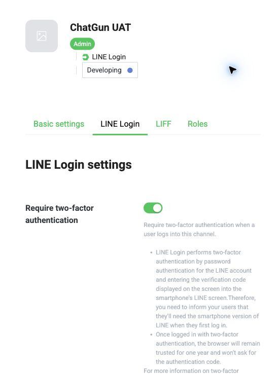
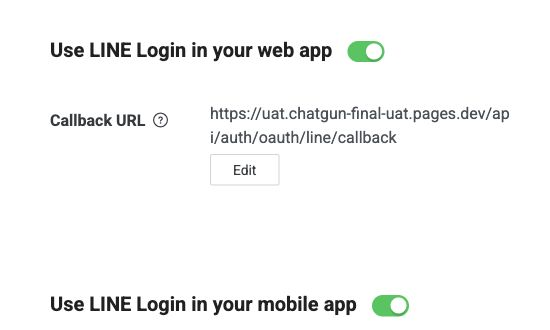
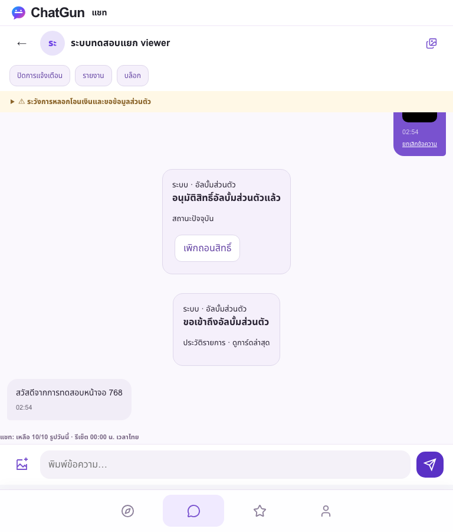
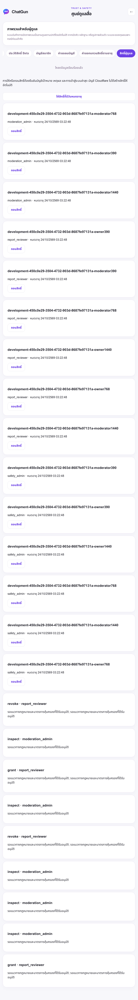
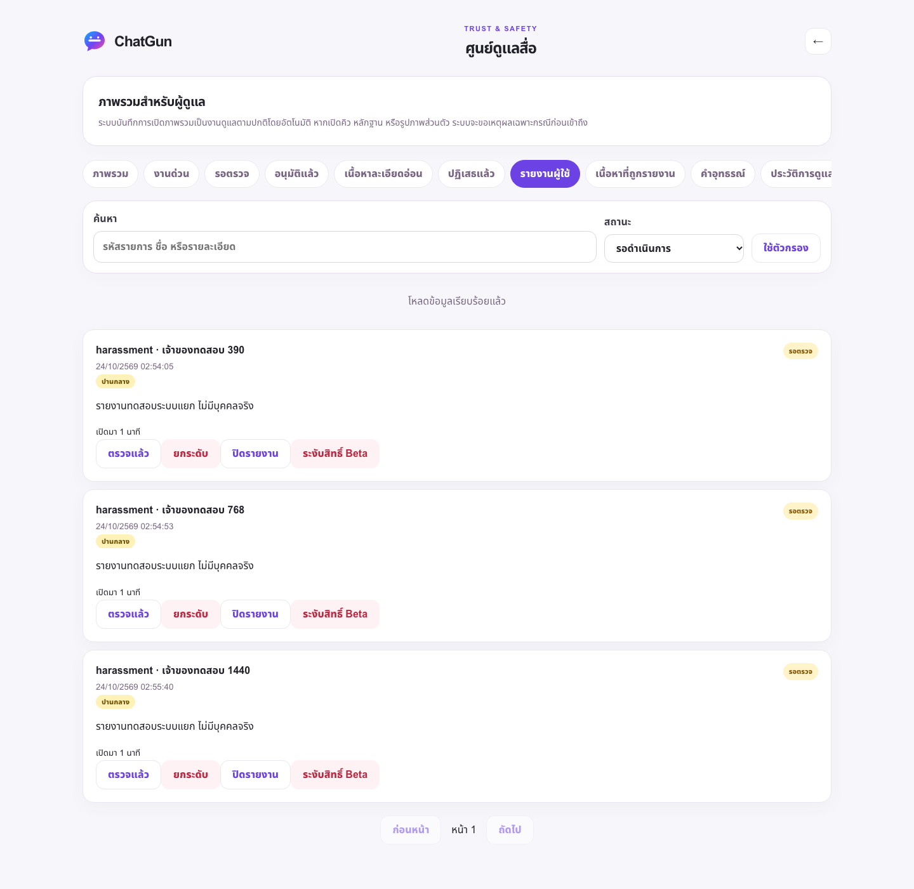

ChatGun — Final UAT Readiness
แพ็กเกจเตรียมทดสอบแบบรวมครั้งเดียว · Dedicated isolated environment · ไม่มีการ deploy Production
Owner enrollment PASS
ตรวจ Account UI แบบ read-only หลังเจ้าของแจ้ง done: บัญชีตรงกับที่อนุมัติ และมี Authenticator/TOTP 1 เครื่อง ไม่อ่านหรือเก็บ QR/setup key/OTP ไม่ให้ role หรือเปิดบริการ UAT ผลนี้ไม่ใช่ protected-app MFA หรือ fresh-auth E2E

OAuth / independent MFA update — 24 October 2026
Google, Meta test app และ LINE UAT channel แยกครบ: exact callbacks และ credentials ใหม่เข้ารหัสเฉพาะ Preview; frozen4a UAT ยังปิดรับสมัคร/OAuth/Social/Media/Admin LINE Developing, required2FA ON, email OFF; Meta v26.0, HTTPS/Strict Mode/secret-proof ON ไม่ Publish หรือเพิ่มผู้ทดสอบ
ตามคำยืนยันเจ้าของ เปิดเฉพาะ TOTP method แล้ว แต่ Apply global MFA settings by default ยัง OFF และไม่เปลี่ยนแอป Production แอปและ policy ของ Admin UAT บังคับ independent TOTP ทุก Access login, session10นาที, HttpOnly/binding cookies ไม่ใช้เงื่อนไข IdP AMR แทน independent MFA และไม่มี bypass/skip ผู้ใช้ยังไม่มี UUID mapping หรือ role
เปิด App Launcher สำหรับ enrollment เฉพาะอีเมลเจ้าของ (policy10นาที/app15นาที) ไม่ใช่การให้สิทธิ์ ChatGun Admin เจ้าของลงทะเบียนแล้ว: Account UI ตรงกับบัญชีที่อนุมัติ และพบ Authenticator/TOTP 1 เครื่อง (Enrollment PASS) ไม่เก็บ QR/setup key/OTP Genuine MFA/fresh-auth ยัง NOT RUN
หลังตั้ง MFA: affected Access/security14/14, live negative17/17 และ390/768/1440ผ่าน Full CI ของ frozen implementation ก่อนหน้า248 Node +119 browser PASS ไม่มี genuine OAuth/MFA claim Production และ protected fixtures ไม่เปลี่ยน ผลตรวจและ handoff · Current MFA read-back · Live negative · Test scope




PARTIALLY READY — EXTERNAL APPROVALS REQUIRED
สร้างและทดสอบ UAT ใหม่แล้ว แต่ยังไม่เริ่ม genuine human UAT เพราะการยืนยัน UUID และสิทธิ์ Admin UAT, ผู้ทดสอบคนที่สอง และการอนุมัติขอบเขตนโยบายยังไม่ครบ (credentials และ TOTP enrollment เตรียมครบแล้ว; protected-app MFA ยัง NOT RUN) ไม่ออกคำเชิญหรือสร้างบัญชีจริงระหว่างการเตรียมนี้
สถานะ PASS / FAIL / BLOCKED / NOT RUN และ owner checklist ทั้งหมด
Performance: measured, not projected
Closed config/health requests:22–77ms in this sample; initial closed page189–251ms. At each width two navigations made38 same-origin requests, including2 API requests. Authenticated synthetic mobile sample initial load1657ms;99 browser responses /45 API responses across navigation and observation;30-second foreground inbox window3 API responses (2 presence,1 conversation), no5xx.
Actual request observations · D1 query plans / caching headers / measurements. This is not account-wide billable usage, monthly-cost or concurrency capacity. No chat thread selected in idle-inbox sample. Actual hidden-tab measurement remains NOT RUN; deterministic visibility regressions retained. No billing upgrade.
One owner-action checklist
Provider and independent-MFA configuration complete; no provider login requested again during setup.
- Completed private Authenticator enrollment (PASS): owner enrollment portal → Cloudflare login → Account → MFA devices → Add an MFA device → Authenticator application. Owner scans/pairs and verifies codes themselves; never send QR/setup key/OTP. This is credential setup, not a ChatGun role grant or full UAT.
- Privately authorize A and a distinct consenting eligible adult B, provider tester access, content and deletion/retention consent. B is not yet identified. Verify genuine UAT owner UUID before a separately approved bounded role.
- Approve expanded Social/location/private-media UAT policies, versions, retention and emergency/appeals procedures. Existing pilot approval is narrower; generic technical approval does not invent a second participant or qualified policy review.
- Confirm19:00–22:00 Asia/Bangkok testing window; no backup/independent appeal reviewer/scanner/24x7 guarantee exists.
Only after all gates pass, issue specifically authorized30-minute single-use invitations privately and coordinate one campaign. Genuine member UAT NOT STARTED. Test cases · Containment/backup/rollback
Responsive evidence — synthetic fixtures only
390px


768px


1440px


Screenshots contain only explicitly disposable automated accounts, not genuine owner/member evidence. Approved NEAR styling retained; no redesign.
Production preserved
Live SHA a73ff21c615dabb6a0c19c0a22685c2370958ca1, schema17, LINE owner pilot only. Public registration, Discovery, Chat, Presence, uploads, Sensitive, OTP and Demo remain off. Original protected Staging counts and issue13 configuration preserved. Existing Production roles not extended. No Production migrations18–21, user mutations, merge or activation.
Read-only live account / Production / protected fixtures evidence. New UAT Workers and resources only. Private backups are not published here. No public Production GO is inferred from synthetic success.